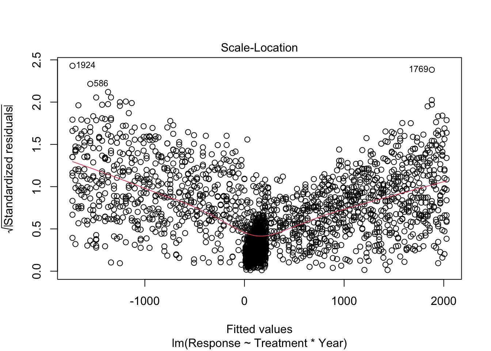

Modelling wise we may have multiple different expectations from this data, are all treatments changing with time? in the same way? The most complex model would be the interaction of Treatment and Year
Which would assume that the effect of Year is different depending on the Treatment level (decrease over time in one treatment, increase over time in another)
This is the same as using lm() and not specifying the family, as it is less code we will do this for gaussian models
lm1.1<-lm(Response~Treatment*Year,df)
We can now check the residuals show no patterns
plot(lm1.1)

This is annoying as we have to press enter in the console to see all the plots We will install some packages from the easystats ecosystem of packages for this. There are other packages we could also use for this (including one of my own) but performance is good
That’s better, we now have some interesting plots but our model doesnt look very good (Probably as we have simulated the data itself)
also we can look at the effect of Year and Treatment where there is no interaction This equates to their being an overall effect of Year and then an effect of Treatment
None of these model assessments are any good so we shouldn’t draw any conclusions from any of these results but we shall try the same method with some real world data and then make some decisions.
Packages often have their own example datasets within them, or a package can be used to store just data without functions etc.
This gives us two datasets in our global environment
As we are going to make simple models here we will clean the data to make our lives easier, this will mean removing NA values. Removing NA’s would normally be something I would not recommend, we (or someone) has worked extremely hard to create this data, so we shouldn’t ever remove data, but NA replacement is complicated and not the subject for now.
Using summary() we can see which columns have NAs and which don’t.
summary(penguins)
species island bill_length_mm bill_depth_mm
Adelie :152 Biscoe :168 Min. :32.10 Min. :13.10
Chinstrap: 68 Dream :124 1st Qu.:39.23 1st Qu.:15.60
Gentoo :124 Torgersen: 52 Median :44.45 Median :17.30
Mean :43.92 Mean :17.15
3rd Qu.:48.50 3rd Qu.:18.70
Max. :59.60 Max. :21.50
NA's :2 NA's :2
flipper_length_mm body_mass_g sex year
Min. :172.0 Min. :2700 female:165 Min. :2007
1st Qu.:190.0 1st Qu.:3550 male :168 1st Qu.:2007
Median :197.0 Median :4050 NA's : 11 Median :2008
Mean :200.9 Mean :4202 Mean :2008
3rd Qu.:213.0 3rd Qu.:4750 3rd Qu.:2009
Max. :231.0 Max. :6300 Max. :2009
NA's :2 NA's :2
Through going into the object and ordering one of the columns we find that the NA’s (which order to last always) are the same rows So we only have to remove two rows to remove the NAs in the biometrics columns, there are more NA’s in the sex column if we want to remove NA’s there are many ways, to be selective we can filter our dataset
Here we will make use of ! this means the opposite of the clause (not this) We also use %in% which is used to tell filter there are more than one element or NAs that we want to get rid of as NA is not classed like normal data
If we now look at the number of rows of the datasets we can see only two rows were removed. (not all the NAs)
nrow(penguins)
[1] 344
nrow(penguins_someNAs)
[1] 342
summary(penguins_someNAs)
species island bill_length_mm bill_depth_mm
Adelie :151 Biscoe :167 Min. :32.10 Min. :13.10
Chinstrap: 68 Dream :124 1st Qu.:39.23 1st Qu.:15.60
Gentoo :123 Torgersen: 51 Median :44.45 Median :17.30
Mean :43.92 Mean :17.15
3rd Qu.:48.50 3rd Qu.:18.70
Max. :59.60 Max. :21.50
flipper_length_mm body_mass_g sex year
Min. :172.0 Min. :2700 female:165 Min. :2007
1st Qu.:190.0 1st Qu.:3550 male :168 1st Qu.:2007
Median :197.0 Median :4050 NA's : 9 Median :2008
Mean :200.9 Mean :4202 Mean :2008
3rd Qu.:213.0 3rd Qu.:4750 3rd Qu.:2009
Max. :231.0 Max. :6300 Max. :2009
species island bill_length_mm bill_depth_mm
Adelie :146 Biscoe :163 Min. :32.10 Min. :13.10
Chinstrap: 68 Dream :123 1st Qu.:39.50 1st Qu.:15.60
Gentoo :119 Torgersen: 47 Median :44.50 Median :17.30
Mean :43.99 Mean :17.16
3rd Qu.:48.60 3rd Qu.:18.70
Max. :59.60 Max. :21.50
flipper_length_mm body_mass_g sex year
Min. :172 Min. :2700 female:165 Min. :2007
1st Qu.:190 1st Qu.:3550 male :168 1st Qu.:2007
Median :197 Median :4050 Median :2008
Mean :201 Mean :4207 Mean :2008
3rd Qu.:213 3rd Qu.:4775 3rd Qu.:2009
Max. :231 Max. :6300 Max. :2009
All sorted
Modelling Categorical Factors
So now we will try prove the obvious Does the flipper length of penguins change between species and between sexes Whether we use an interaction or not depends on if our scientific thought believes the relationship of Species to flipper length is different between sexes (sexual dimorphism may not be consistent across species)
As we only have factors in our model we don’t see a ‘cloud’ of points, but the line still is flat and horizontal so this is good As the diagnostics are good we can look at the results
summary(lm2.1)
Call:
lm(formula = flipper_length_mm ~ species * sex, data = penguins_noNAs)
Residuals:
Min 1Q Median 3Q Max
-15.7945 -3.4110 0.0882 3.4590 17.5890
Coefficients:
Estimate Std. Error t value Pr(>|t|)
(Intercept) 187.7945 0.6619 283.721 < 2e-16 ***
speciesChinstrap 3.9408 1.1742 3.356 0.000884 ***
speciesGentoo 24.9124 0.9947 25.044 < 2e-16 ***
sexmale 4.6164 0.9361 4.932 1.3e-06 ***
speciesChinstrap:sexmale 3.5600 1.6606 2.144 0.032782 *
speciesGentoo:sexmale 4.2176 1.3971 3.019 0.002737 **
---
Signif. codes: 0 '***' 0.001 '**' 0.01 '*' 0.05 '.' 0.1 ' ' 1
Residual standard error: 5.655 on 327 degrees of freedom
Multiple R-squared: 0.8396, Adjusted R-squared: 0.8372
F-statistic: 342.4 on 5 and 327 DF, p-value: < 2.2e-16
Okay there are a lot of numbers here but what does it actually mean first lets plot the raw data, boxplots are probably the best for categorical factors We can re-use some of our code from the intro for appearance and colours
Now we can also see what the model believes about our data This should be similar to our raw data but not identical to do this we make simulated raw data with this same predictor variables in we then use the model to predict the response variable based on those predictor variables
Therefore, we make a data set with just sex and species (be careful of spelling and capitalisation, R wants it identical) the model then predicts the average Flipper length in mm based on those species and sexes. We can also tell the Predict function to predict error (Standard Error here)
Okay that is what we do with linear models of categorical factors But what if we want to see the relationship between flipper_length_mm and bill_length_mm But we know there are species differences and sexual differences in flipper length As Males always tend to be larger lets just assess species differences in their flipper to bill relationship
Call:
lm(formula = flipper_length_mm ~ species * bill_length_mm, data = penguins_noNAs)
Residuals:
Min 1Q Median 3Q Max
-24.0561 -3.2927 -0.1646 3.5212 16.2890
Coefficients:
Estimate Std. Error t value Pr(>|t|)
(Intercept) 158.5047 7.0383 22.520 < 2e-16 ***
speciesChinstrap -11.8689 12.5448 -0.946 0.3448
speciesGentoo -8.2555 10.8008 -0.764 0.4452
bill_length_mm 0.8139 0.1809 4.500 9.46e-06 ***
speciesChinstrap:bill_length_mm 0.1934 0.2788 0.694 0.4884
speciesGentoo:bill_length_mm 0.5943 0.2495 2.382 0.0178 *
---
Signif. codes: 0 '***' 0.001 '**' 0.01 '*' 0.05 '.' 0.1 ' ' 1
Residual standard error: 5.799 on 327 degrees of freedom
Multiple R-squared: 0.8314, Adjusted R-squared: 0.8288
F-statistic: 322.5 on 5 and 327 DF, p-value: < 2.2e-16
As we hypothesised before modelling that there would be different bill to flipper relationships between species The interaction model follows our scientific assumptions Therefore, it would be incorrect to use lower complexity models (without the interactoin for example)
To predict again we want to create lines for each species To do this we want to create fake bill length data over the same range for each species
Here we will use the seq() function that creates a sequence of values from your first number to your last number And you can chose the length of the vector it creates or the distance between each individual value